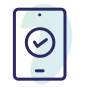
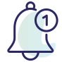

Expanse for nurses
The best care. Humanly possible.
Your nurses are working harder than ever as staffing shortages — and patient acuity — increase.
Unite clinicians across your enterprise with an intelligent EHR that fosters collaboration and safer care. Intelligent, intuitive tools offer clinical decision support and a personalized user experience, so they can spend more time with patients instead of technology.
Plus, mobile access allows nurses to move without limitations, wherever they’re needed, as they support patients — and each other.
See how Expanse empowers your nurses in our on-demand webinar, “More Team, Less Work, and the Business of Healthcare.”

Perfecting care for patients
When nurses practice with the right smart device for the task, it's a win-win for them and their patients.
Nurses can:
- Grab a tablet to perform handoffs, review patient education, and discuss discharge plans, right at the bedside.
- Navigate the personalized chart and document easily when they're with patients, not later on at the nurses' station.
- Use a smartphone to effortlessly document care at the bedside:
- Scan patient wristbands to access charts and administer medications.
- Capture wound images.
- Scan smart pumps to send order details and receive infusion data.
- Gain support from virtual nurses, who use Expanse to focus on admissions documentation, discharge planning, and other time-consuming tasks that don’t require hands-on care.
Find out how virtual nursing and Expanse Patient Care can help relieve the burden on bedside nurses.
Make their day
Sherri Hess, CNIO at HCA Healthcare, recounts nurses’ responses when using MEDITECH’s Expanse Point of Care for the first time, including “You have made my day!”
Hess also shares how a common user interface has improved nurse and physician collaboration at HCA.
Video duration: min. sec.
Gain time with personalized tools
Everybody's different. Our agile solution lets nurses practice their way. Features include:
- Mobile task management using tablets and smartphones.
- Real-time home screen monitoring of all patient activity for smoother handoffs.
- Search functionality to find data in a patient's chart, saving time and bringing nurses directly to meaningful patient data.
- View and workflow personalization to practice the way that makes the most sense.
- Same intuitive user interface as their physician colleagues, enhancing communication and teamwork.
What our customers are saying about Expanse
“[Nurses’] job is to take care of the patient, and it’s so important to make sure we’re clearing that way. The partnership with MEDITECH will do that.”
Dan Nash
Chief Information Officer
Emanate Health
“We could see Point of Care's potential and the benefits of having a pocket-sized device staff can easily take into a patient's room without disruption. It would also untether our clinicians from their WOWs and enable them to spend more time engaging with patients at the bedside.”
Teresa Fortune
Clinical Operations Manager
South Okanagan General Hospital
“Everything is at our fingertips in a more user-friendly layout. It is amazing having easy access to everything we need to know about our patient basically on one screen rather than clicking through several tabs and pages to find what we need.”
Eric Rowland, RN
ED Nurse
King’s Daughter Medical Center
"With the increased mobility of Expanse on a handheld device, nurses can slip into a room and administer medication in under a minute, saving time and barely interrupting a recovering patient."
Jureza Moselina, MSN/INF, BSN, RN
Director of Clinical Informatics
Val Verde Regional Medical Center
"I get excited when I see the tools for our clinicians. I want the latest and greatest for them, and I want things to be seamless. Expanse Patient Care has given us all of that and more."
Carol Huesman
Chief Information Officer
Major Health Partners
“We've been able to transform our model of care here at Phoebe, partnering with our virtual nurse team to shift those more administrative-type tasks so that we can ensure that they're thorough, great quality, and safe for our patients, and that we allow our bedside nurses to focus on true patient care and being at the bedside with our patients.”
Kelsey Reed, DNP, FNP-C
Director of Patient Care
Phoebe Putney Health System
“It’s definitely easy if you’re at the bedside and the provider’s asking you, ‘What were the labs? Did they come back yet?’ You can pull them up on the screen and show them at the patient’s bedside, which allows for better communication with the patient on what to expect from their care.”
Lindsay Lea, RN, BSN
CNO and VP, Clinical Services
Upper Connecticut Valley Hospital
[Expanse] allows them the freedom to go wherever mom is, wherever baby is, and make sure they're getting that documentation done. So often they're doing everything all at once. To have something that is just right there, it's an easy tool. They can scan, scan, and then go.
Brianna Juszczak, RN
Director of Acute Care and OB
Mile Bluff Medical Center
Safety nets for busy clinicians
Expanse provides the stopgap measures to prevent errors and preserve your peace of mind. Your nurses and patients will benefit from:

Bedside medication, transfusion, and phlebotomy verification that enhance patient safety.
Predictive analytics, including surveillance boards and notifications that flag for patients at risk for sepsis, falls, and other hospital-acquired conditions.
Evidence-based content, rules, and workflows, so nurses are never alone in their decision-making.

Real-time notifications of out-of-range values and overdue interventions for improving clinical outcomes.
Team up with a complete ambulatory solution
Mobile, integrated, and intuitive, Expanse Ambulatory embodies a “more team, less work” philosophy.
- Facilitate nurses’ communication and collaboration with all care settings. Expanse Ambulatory unites practices and clinics with health systems using the Expanse EHR.
- Meet nurses’ individual needs with widgets, preferences, and shortcuts that match unique workflows and practice patterns.
- Engage patients with secure messaging and texting. Leverage dynamic registries to manage patients as they cross care settings, manage care for chronic diseases, and maintain wellness.
Discover Expanse Ambulatory and Expanse Care Compass, MEDITECH’s solutions for practices and other outpatient settings.
Find out how care teams are making a difference with Expanse
Virtually reducing burnout
Hear Director of Patient Care Kelsey Reed, DNP, describe how Phoebe Putney Health System uses virtual nursing and Expanse Point of Care to mitigate nurses’ documentation burden. In the podcast, Dr. Reed explains why handheld devices have been so successful at her organization.
Kelsey Reed, DNP, FNP-Ch
Director of Patient Care
Phoebe Putney Health System
Whatever your role, Expanse can be tailored to how you want to practice.
See how Expanse connects care teams in our on-demand webinar, “More Team, Less Work, and the Business of Healthcare.”